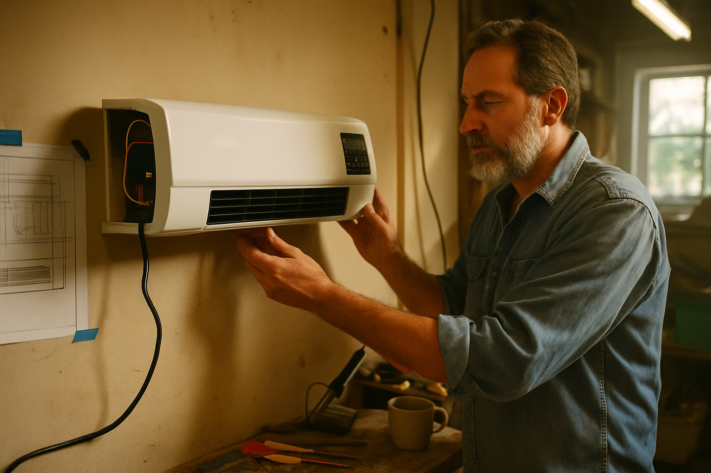
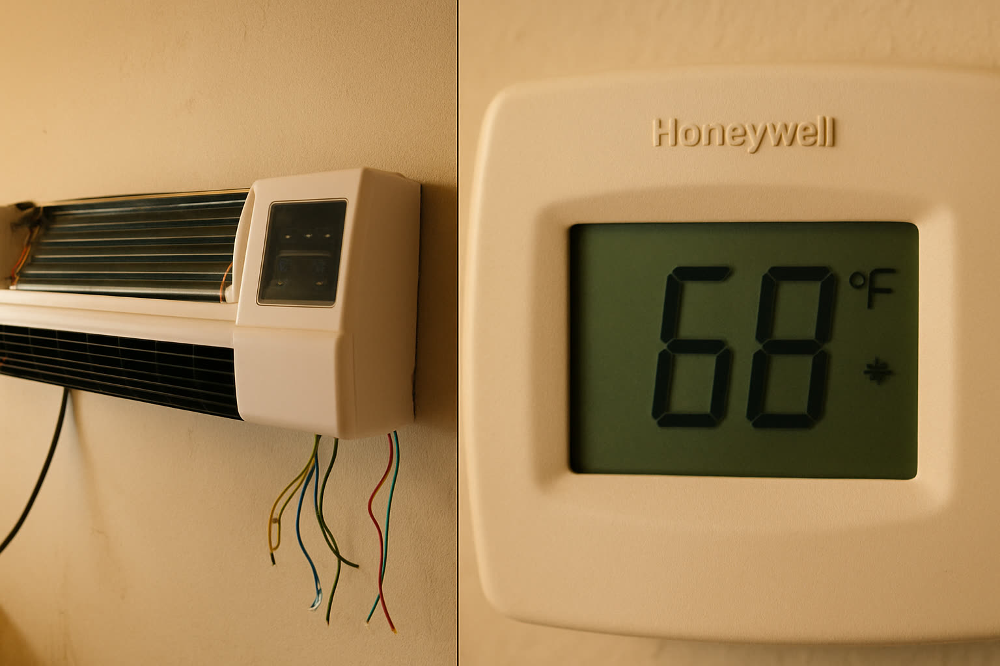

Berliner Ingenieur zerlegt eine 3.900 € Klimaanlage — Baut einen Ersatz für 137 €, den die Industrie verschweigen will
Nachdem seine 78-jährige Mutter in einer brutalen Hitzewelle fast erstickt wäre, weil sie sich die Reparatur nicht leisten konnte, baute ein erfahrener Klimatechniker das Gerät von Grund auf neu. Jetzt versuchen zwei der größten Hersteller der Welt, dieses Wissen zu begraben.

"Meine Mutter wäre fast gestorben, weil sie sich einen Kostenvoranschlag von 3.900 € nicht leisten konnte. Also verbrachte ich drei Monate in meiner Garage, um sicherzustellen, dass das keiner anderen Mutter passiert." — Daniel R., 47, Berlin.
Der Kostenvoranschlag betrug 3.900 €.
Daniels 78-jährige Mutter konnte es sich nicht leisten. Also saß sie drei Tage lang bei 38 Grad Innentemperatur in der Wohnung, trank warmes Leitungswasser und kämpfte um Atem.
Sie ist 71 Jahre alt und lebt von ihrer Rente. Ihre zentrale Klimaanlage gab während einer extremen Hitzewelle in Berlin den Geist auf. Die Schätzung — mit rotem Kugelschreiber an ihren Kühlschrank geheftet — entsprach mehr als zwei Monatsrenten.
Daniel fuhr die 11 Kilometer zu ihrem Haus in Rekordzeit. Er nahm den Kompressor auseinander, sah die korrodierten Leitungen und tat etwas, das er in 15 Jahren als Klimatechniker noch nie getan hatte.
Er setzte sich auf die Terrasse und weinte.
Dann wurde er wütend.
Die Offenbarung
Daniel R. entwarf 15 Jahre lang Klimasysteme für Krankenhäuser, Serverfarmen und Labore. Er ist der Mann, den man ruft, wenn die Intensivstation nachts um 3 Uhr zu heiß wird.
Als er im Wohnzimmer seiner Mutter stand — vor einem 25 Jahre alten System, das neu 8.000 € kostete und nun 3.900 € für eine Reparatur forderte — sah er, was fast kein Hausbesitzer sieht.
Drei Monate. Keine Freunde. Nur die Arbeit. Daniel lötete Platinen für den ersten Prototyp in seiner Berliner Garage.
Er ging in dieser Woche nicht zurück ins Büro. Er ging in seine Garage.
Er kaufte einen Kondensator bei eBay Kleinanzeigen für 80 € und begann, ihn Stück für Stück zu zerlegen. Schaltpläne an der Wand. Multimeter an jedem Kontakt. Drei Monate lang sah er seine Freunde nicht.
Als er fertig war, verstand er genau, warum eine private Reparatur 3.900 € kostet und warum eine Industrie-Wärmepumpe im Krankenhaus nur 300 € kostet.
Es wurde absichtlich überteuert gebaut.
Der Test

Der erste Prototyp an Daniels Garagenwand — und das Thermostat auf der anderen Seite des Raumes vier Minuten nach dem Einschalten.
Der erste Prototyp war hässlich. Ein Gehäuse aus Kunststoffteilen, heraushängende Drähte, eine handgelötete grüne Platine und eine Kühlspirale aus Kupfer und Aluminium, die er selbst gefertigt hatte.
Er montierte es an einem Samstagmorgen im 45 m² großen Wohnzimmer. Draußen waren es 34 Grad. Das Bosch-Wandthermostat zeigte ebenfalls 34 Grad an.
Er steckte es ein und startete die Stoppuhr.
- 60 Sekunden: 29°C
- 2 Minuten: 24°C
- 4 Minuten: 20°C
Ein Temperatursturz um 14 Grad in einem 45 m² Raum. Von einem Gerät in der Größe einer Soundbar. Es verbraucht weniger Strom als seine Mikrowelle.
Möchten Sie das Gerät sehen, das einen 45 m² Raum in vier Minuten um 14 Grad abgekühlt hat?
Daniel und sein Team halten eine limitierte Launch-Promotion direkt für Endverbraucher ab — bis zu 60% Rabatt, solange der Vorrat reicht.
Wie es tatsächlich funktioniert
Coolizi mit einer semi-transparenten Hülle — der TurboCool™ Kern, Kupfer-Aluminium-Kühlspirale, Präzisionsventilator und Steuerplatine.
Das Gerät, das Daniel baute — später Coolizi genannt — sieht täuschend einfach aus. Es ist ein schlankes, weißes Wandgerät, etwa so groß wie eine Soundbar (60 cm breit), mit einem kleinen grünen LED-Panel und Lamellen an der Unterseite.
Was sich im Inneren befindet, machte die Industrie nervös.
Anstatt der sperrigen Kompressor-Architektur nutzt der Coolizi einen TurboCool™ Kern — ein präzisionsgefertigtes Miniatur-Wärmetauschersystem mit 14.200 U/min, das eher der Technik in modernen Rechenzentren ähnelt als dem, was man im Bauhaus findet.
Hier ist die Funktionsweise einfach erklärt:
- Das Gerät zieht warme Raumluft durch die oberen Öffnungen an.
- Die Luft strömt über eine eng gewickelte Kupfer-Aluminium-Spirale — wie in der Industrie, nur miniaturisiert.
- Die Spirale entzieht der Luft in Millisekunden die Wärme.
- Ein Präzisionsventilator bläst die nun eiskalte Luft durch die unteren Lamellen zurück in den Raum.
- Das Kondenswasser, das normalerweise einen Schlauch erfordert? Es verdunstet im Inneren des Geräts. Nichts zu leeren. Kein Außengerät nötig.
Echte Aufnahmen. Selbstmontage in unter 5 Minuten. Kein Handwerker. Kein Bohren für Gasleitungen. Kein Abflussschlauch.
Alles läuft über eine normale 230-Volt-Steckdose. Keine spezielle Verkabelung. Kein Bohren durch die Außenwand.
Es lässt sich an jeder Wand in unter 5 Minuten montieren. In unabhängigen Tests kühlte es Räume bis zu 50 Quadratmeter herunter auf 16 Grad mit einem Bruchteil des Stroms eines herkömmlichen Systems.
Warum es so beliebt ist
In den acht Monaten seit Verkaufsstart haben über 9.800 deutsche Familien verifizierte 5-Sterne-Bewertungen hinterlassen. Das sagen die Nutzer:
- Bis zu 75% günstiger im Betrieb als zentrale Klimaanlagen — Mieter berichten von Stromkosten-Senkungen um 70 € bis 180 € pro Monat im Sommer.
- Kühlt UND heizt — schaltet im Winter in den Heizmodus bis 45°C. Ersetzt Heizlüfter und senkt die Gasrechnung.
- Installation in unter 5 Minuten — Wandhalterung mit zwei Schrauben, Gerät klickt ein. Kein Handwerker. Keine Genehmigung nötig.
- Flüsterleise — fast unhörbar. Mieter sagen, sie schlafen zum ersten Mal seit Jahren durch.
- Nur die genutzten Räume kühlen — man lässt das Hauptsystem auf niedriger Stufe und der Coolizi übernimmt das Schlafzimmer. Die Ersparnis ist enorm.
Video eines Kunden. Coolizi im Wohnzimmer montiert. Temperatur sank um 12°C in unter 8 Minuten.
Sichern Sie sich den Launch-Rabatt, bevor er ausverkauft ist
Coolizi war dieses Jahr bereits dreimal ausverkauft. Die aktuelle Aktion bietet 50% Rabatt auf ein Einzelgerät oder 60% auf das 2er-Pack — inklusive Gratis-Versand und 30 Tage Garantie.
Die Vertuschung
Innerhalb von sechs Wochen nach dem Start kontaktierten angeblich zwei der größten Klimaanlagen-Hersteller Deutschlands Daniels Team.
Sie wollten die Technik nicht lizenzieren.
Sie boten ihm eine siebenstellige Summe an, damit er es vom Markt nimmt — Verschwiegenheitserklärung unterschreiben, Design einmotten, verschwinden.
Eine Rekonstruktion des Moments, als Daniel den Scheck ablehnte, um die Verbraucher zu schützen.
Daniel lehnte beide Angebote ab. Er arbeitete stattdessen direkt mit unabhängigen Ingenieuren zusammen, strich die Zwischenhändler und bringt den Coolizi nun direkt zum Kunden — zu einem Bruchteil dessen, was vergleichbare Geräte im Baumarkt kosten.
Echte Kunden, echte Bewertungen
Ein kleiner Auszug aus den 9.800+ verifizierten 5-Sterne-Bewertungen:

Ich bin Mieterin und mein Vermieter wollte keine Klimaanlage erlauben. Der Coolizi war in 5 Minuten montiert und meine Stromrechnung sank sofort um 110 € im ersten Monat. Kaufe gerade einen zweiten für die Küche.
Ich habe einen leichten Schlaf und herkömmliche Geräte waren mir zu laut. Das hier ist flüsterleise. Man vergisst, dass es an ist. Mein Zimmer bleibt die ganze Nacht bei 19 Grad.
Ich sollte 3.900 € für eine Reparatur zahlen. Habe stattdessen zwei Coolizi gekauft. Oben ist es jetzt kühler als unten. Gesamtkosten unter 250 €. Alles richtig gemacht.
Kostenvergleich
Zum Vergleich:
| Option | Anschaffung | Montage | Unterhalt |
|---|---|---|---|
| Klimareparatur | 3.200 € – 4.500 € | Fachmann nötig | Hoher Stromverbrauch |
| Neue Zentral-Klima | 8.000 € – 12.000 € | Genehmigung + Tage Montage | Hoher Stromverbrauch |
| Mini-Split System | 3.500 € – 5.500 € | Profi + Wandbohrung | Moderater Verbrauch |
| Fenster-Klimagerät | 250 € – 600 € | Blockiert Fenster, laut | Hoher Stromverbrauch |
| Coolizi | 137 € (Launch) | 5 Min. selbst gemacht | Bis zu 75% weniger als Zentral-Klima |
Ohne Rabatt kostet der Coolizi 275 € — bereits viel günstiger als Konkurrenzprodukte.
Mit der aktuellen Aktion kostet es 137 € für ein Einzelgerät (-50%) oder 99 € pro Stück im 2er-Set (-60%) .
Das ist weniger als die monatliche Stromrechnung vieler deutscher Familien im Sommer.
Lieferumfang:
- 1× Coolizi Dual-Mode Wandgerät (Kühlen + Heizen)
- Fernbedienung mit allen 6 Modi
- Wandhalterung + Montagematerial
- Gratis Versand (Deutschland)
- 30 Tage Geld-zurück-Garantie
- 1 Jahr Herstellergarantie
Ein Wort zur Warnung
Coolizi war dieses Jahr bereits dreimal komplett ausverkauft.
Meteorologen sagen einen der heißesten Sommer seit Jahrzehnten voraus — das Team produziert so schnell wie möglich. Sobald dieser Vorrat weg ist, gilt wieder der Normalpreis.
Die aktuelle Produktion wird direkt ab Lager versendet. Wenn diese Charge ausverkauft ist, steigen die Preise wieder.
OHNE
RISIKO
30 Tage Geld-zurück-Garantie
Wenn Sie innerhalb einer Woche keinen Unterschied spüren, schicken Sie es für eine volle Rückerstattung zurück. Keine Fragen, keine Gebühren.
— Meike
P.S. — Viele Leser fragen, ob die Preise wirklich steigen. Laut Team: Ja. Der aktuelle Preis ist nur für die erste Charge gesichert. Danach geht es zurück auf 275 €. Wenn Sie 3.900 € sparen wollen, handeln Sie jetzt. — M.H.